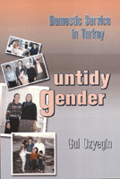

<body bgcolor="#FFFFFF" text="#000000" link="#0000FF" vlink="#CC0000" alink="#CC0000"><center><hr width="350" size="1" align="center" noshade>Interviews with Turkish maids yield surprising facts about class and gender roles<hr width="350" size="1" align="center" noshade><p><a href="https://cdcshoppingcart.uchicago.edu/Cart/ChicagoBook.aspx?ISBN=9781566398077&&PRESS=temple" target="_top">Buy this book!</a> | <a href="https://cdcshoppingcart.uchicago.edu/Cart/Cart.aspx?PRESS=temple" target="_top">View Cart</a> | <a href="https://cdcshoppingcart.uchicago.edu/Cart/Cart.aspx?PRESS=temple" target="_top">Check Out</a></p><p></p></center><!--none//--><h1>Untidy Gender</h1>
<H2>Domestic Service in Turkey</H2>
<h3>Gul Ozyegin</h3>
<P>cloth 1-56639-807-X $89.50, Dec 00, <FONT COLOR=#990033>Available</FONT>
<br>paper 1-56639-808-8 $32.95, Dec 00, <FONT COLOR=#990033>Available</FONT>
<br>Electronic Book 1-43990-348-4 $32.95 <FONT COLOR=#990033>Available</FONT>
<BR> 272 pp
6x9
10&nbsp;tables 17&nbsp;halftones
</P><BLOCKQUOTE><I>"A sophisticated and sensitive text on domestic service in Turkey that singles itself out by a powerful account of the micro-sociology of power. It engages the reader in much broader debates about the mutual relations of class and gender, the role of patriarchal controls in shaping informal female labor markets and the management of status differentials by women in their daily lives. An important scholarly contribution written in a lucid and accessible style."</I>
<br>&#151<b>Deniz Kandiyoti</b>, School of Oriental and African Studies, University of London<I></I></BLOCKQUOTE>
<p><I>Untidy Gender</I> takes readers into the interconnected worlds of Turkish maids and the women who employ them, tracing the incorporation of rural migrant women into the interiors of the domestic spheres of the urban middle-classes. Firmly grounded in data collected through a representative survey of 160 domestic workers, in-depth interviews, and participant observation in the kinship-based communities of domestic workers, this book forges a new understanding of the complex interaction between gender and class subordination.
<p>Ozyegin traces the lives of two kinds of workers; those from the squatter settlements who work in a number of locations, and those who live with husbands employed as "doorkeepers" or building superintendents in the basements of middle-class apartment buildings. In a literal "upstairs, downstairs" arrangement, the latter women sometimes take on apartment cleaning for clients in the building.
<p>At the center of the book are a number of ironies about patriarchy. On the surface, husbands have absolute control over whether or not their wives work, but some women work in secret, and those "doorkeeper" husbands who allow their wives to work often provide child care themselves. Ironically, the very constraints on the spatial and social mobility of the women creates a labor market in which domestic workers' labor is expensive and not readily forthcoming, which, in turn, gives them a degree of power in negotiating their relationship with their middle-class employers.
<p><I>Untidy Gender</I> offers insights not only into the gender and class dynamics of Turkish society, but contributes to the refinement of central terms of feminist scholarship and research on work in the informal sector, cross-class relations between women, gender and class inequality, and women's experiences of modernity and urbanization. The author ends with a personal account of her own difficulties with the class tensions of the maid-employer relationship.
<BR>&nbsp;<h2>Excerpt</h2><P>Excerpt available at <a href="http://www.temple.edu/tempress">www.temple.edu/tempress</a></p>
<BR>&nbsp;<h2>Reviews</h2>
<p><I>"</I>Untidy Gender<I> makes contributions to a large number of debates in several social science fields and sub-fields. And it does so on an extraordinarily sound methodological base: Ozyegin was able to construct a random sample for her 'women in the basement.' This is the gold standard of research, and may be unique in the research annals of studies of domestic workers."</I>
<br>&#151<b>Rae Lesser Blumberg</b>, William R. Kenan, Jr. Professor of Sociology, University of Virginia
<p><I>"This original book sheds new light on the dynamics of modernity and newly constituted urban identities. Through a careful ethnographic study of paid domestic work, Ozyegin illuminates the varied ways in which relations of class and gender inequalities are shaped and maintained. American audiences interested in rural-urban migrants, in intersectionalities of race, class, and gender, and in identities, power, and resistance in the workplace will find some of the most compelling ethnography and many valuable theoretical nuggets in this book."</I>
<br>&#151<b>Pierrette Hondagneu-Sotelo</b>, Associate Professor, Department of Sociology, University of Southern California
<p><I>"Ozyegin presents a cutting-edge analysis of the complexities of modernization by focusing on gender relations. While avoiding numerous rhetorical traps around questions of 'difference' Ozyegin seamlessly weaves together a thoughtfully articulated theory with a meticulous empirical analysis of patriarchal and class relations among modern urban women and more traditional migrant women living at the margins of modernity. Given its significant substantive and theoretical contributions, I will look forward to teaching </I>Untidy Gender<I> in my courses."</I>
<br>&#151<b>Judith M. Gerson</b>, Associate Professor, Departments of Sociology and Women's Studies, Rutgers University, New Brunswick
<BR>&nbsp;<h2>Contents</h2><P>
<p>Acknowledgments
<br>1. The View from Downstairs
<br>2. Husbands, Households, and Other Determinants of Women’s Work
<br>3. Neither Maids Nor Cleaners
<br>4. Intimate Weapons of the Weak
<br>5. The Domestic Work of Maids, Mothers, and Men
<br>6. Earning Power and Women’s Prerogative
<br>7. Conclusion
<br>Appendix: Sampling Procedures
<br>Notes
<br>References
<br>Index
</P><BR>&nbsp;<H2>About the Author(s)</H2>
<table><tr><td valign="top"><img src="/tempress/authors/1263_au.gif" height="90" width="75"></td><td width="100%" valign="middle"><p><B>Gul Ozyegin</B> is Assistant Professor of Sociology and Women's Studies at the College of William and Mary.</P></td></tr></table>
<BR><H2>Subject Categories</H2>
<p><A HREF="/tempress/women.html" TARGET="_top">Women's Studies</a>
<BR><A HREF="/tempress/labor.html" TARGET="_top">Labor Studies and Work</a>
</p>
<BR><h2 class="inpageheading">In the series</H2>
<P><I><a href="http://www.temple.edu/tempress/women_political.html" onMouseOver="window.status='Click for other books in this series!'; return true;" onMouseOut="window.status=''; return true;" target="_top">Women in the Political Economy</a></i>, edited by Ronnie J. Steinberg.
</p><p>No longer active.<p><i>Women in the Political Economy</i>, edited by Ronnie J. Steinberg, includes books on women and issues of work, family, social movements, politics, feminism, and empowerment. It emphasizes women's roles in society and the social construction of gender and also explores current policy issues like comparable worth, international development, job training, and parental leave.</p>
<p align="center"><a href="https://cdcshoppingcart.uchicago.edu/Cart/ChicagoBook.aspx?ISBN=9781566398077&&PRESS=temple" target="_top">Buy this book!</a> | <a href="https://cdcshoppingcart.uchicago.edu/Cart/Cart.aspx?PRESS=temple" target="_top">View Cart</a> | <a href="https://cdcshoppingcart.uchicago.edu/Cart/Cart.aspx?PRESS=temple" target="_top">Check Out</a></p><p><font face="Arial" size="1"><a href="copyright.html" onMouseOver="window.status='Web Copyright Policy';return true;" onMouseOut="window.status=''" title="Web Copyright Policy">&copy;</a> 2015 <a href="http://www.temple.edu" target="new" onMouseOver="window.status='Link to Temple University home page';return true;" onMouseOut="window.status=''" title="Link to Temple University home page">Temple University</a>. All Rights Reserved. http://www.temple.edu/tempress/titles/1263_reg.html</font></p>